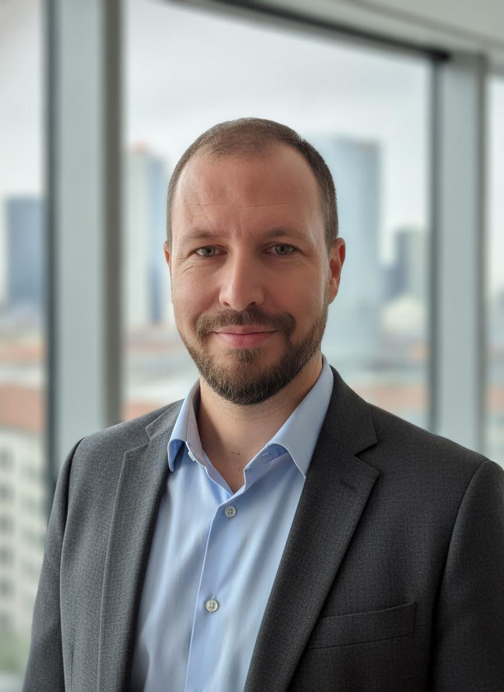

transport phenomena, and energy
applications through research
and teaching.

As a research scientist, I am deeply invested in exploring both the fundamental and practical realms of transport phenomena. My expertise particularly lies in fluid mechanics and energy technology, where I employ both experimental and numerical methods.
Currently, I work as a professor and researcher in Rio de Janeiro, Brazil, with research activities focused on experimental fluid mechanics, turbulent flows, particle-laden flows, flow diagnostics, and thermal-fluid applications.
My work connects fundamental investigations of flow physics with applied problems in engineering, including pipe flows, fouling, multiphase systems, heat transfer, and energy-related applications.